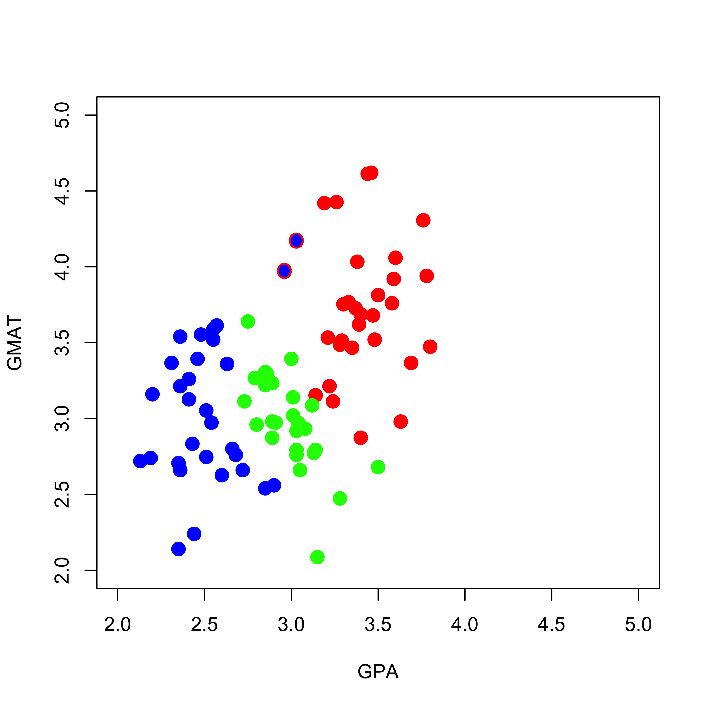
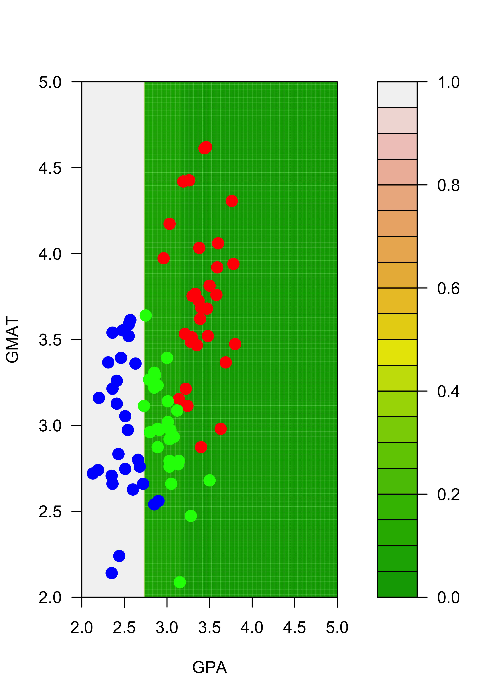
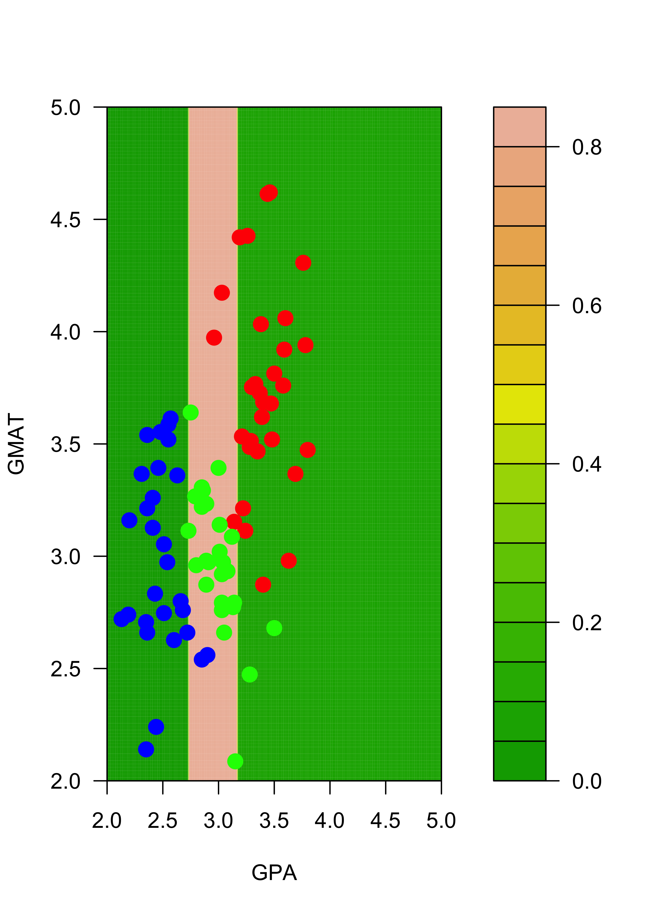
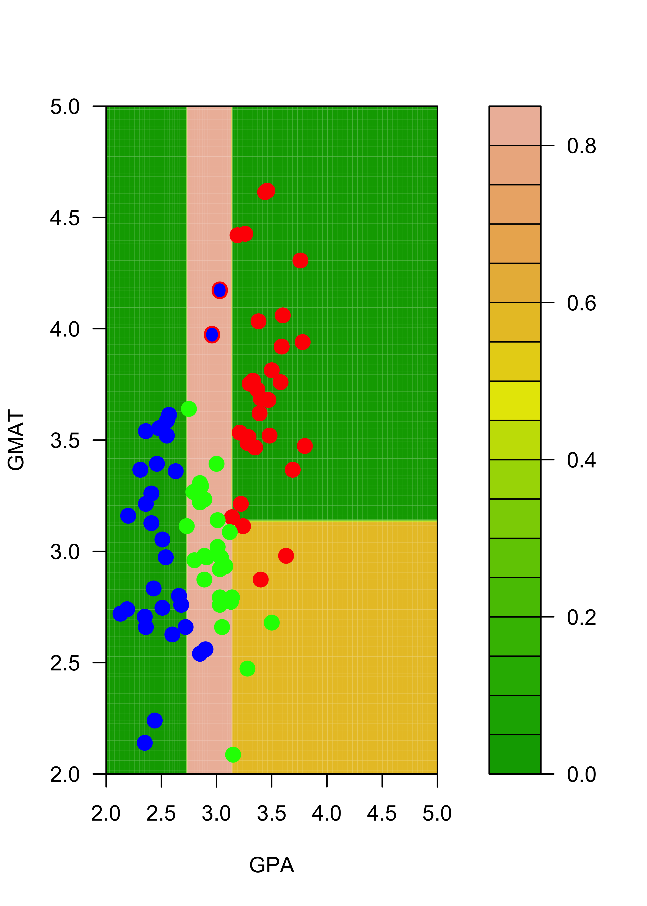
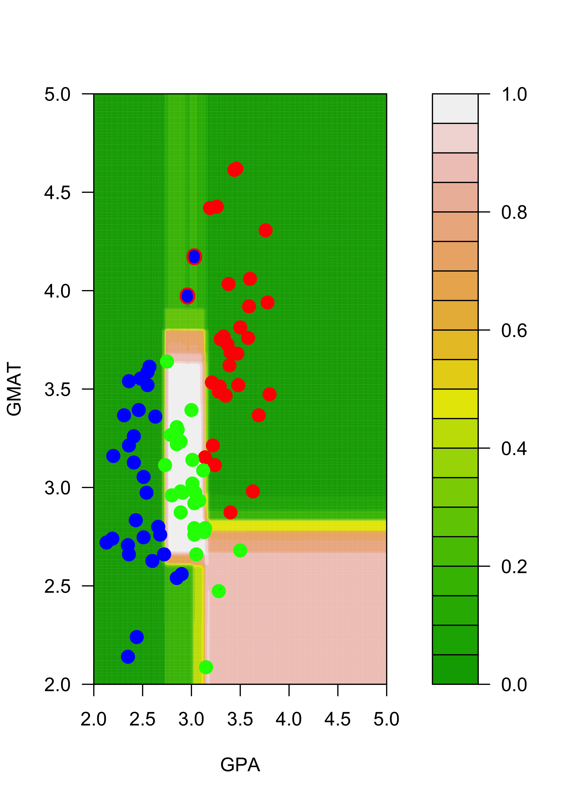

mm <- read.table("data/T11-6.DAT", header = FALSE)15 Bagging for classification
15.1 Instability of trees (motivation)
Just like in the regression case, classification trees can be highly unstable (specifically: relatively small changes in the training set may result in comparably large changes in the corresponding tree). We illustrate the problem on the very simple graduate school admissions example (3-class 2-dimensional covariates) we used in class. First read the data:
We transform the response variable V3 into a factor (which is how class labels are represented in R, and what rpart() expects as the values in the response variable to build a classifier):
mm$V3 <- as.factor(mm$V3)To obtain better looking plots later, we now re-scale one of the features (so both explanatory variables have similar ranges):
mm[, 2] <- mm[, 2] / 150We use the function rpart to train a classification tree on these data, using deviance-based (information) splits:
library(rpart)
a.t <- rpart(V3 ~ V1 + V2, data = mm, method = "class", parms = list(split = "information"))To illustrate the instability of this tree (i.e. how the tree changes when the data are perturbed slightly), we create a new training set (mm2) that is identical to the original one (in mm), except for two observations where we change their responses from class 1 to class 2:
mm2 <- mm
mm2[1, 3] <- 2
mm2[7, 3] <- 2The following plot contains the new training set, with the two changed observations (you can find them around the point (GPA, GMAT) = (3, 4)) highlighted with a blue dot (their new class) and a red ring around them (their old class was “red”):
plot(mm2[, 1:2],
pch = 19, cex = 1.5, col = c("red", "blue", "green")[mm2[, 3]],
xlab = "GPA", "GMAT", xlim = c(2, 5), ylim = c(2, 5)
)
points(mm[c(1, 7), -3], pch = "O", cex = 1.1, col = c("red", "blue", "green")[mm[c(1, 7), 3]])
As we did above, we now train a classification tree on the perturbed data in mm2:
a2.t <- rpart(V3 ~ V1 + V2, data = mm2, method = "class", parms = list(split = "information"))To visualize the differences between the two trees we build a fine grid of points and compare the predicted probabilities of each class on each point on the grid. First, construct the grid:
aa <- seq(2, 5, length = 200)
bb <- seq(2, 5, length = 200)
dd <- expand.grid(aa, bb)
names(dd) <- names(mm)[1:2]Now, compute the estimated conditional probabilities of each of the 3 classes on each of the 40,000 points on the grid dd:
p.t <- predict(a.t, newdata = dd, type = "prob")
p2.t <- predict(a2.t, newdata = dd, type = "prob")The next figures show the estimated probabilities of class “red” with each of the two trees:
filled.contour(aa, bb, matrix(p.t[, 1], 200, 200),
col = terrain.colors(20), xlab = "GPA", ylab = "GMAT",
plot.axes = {
axis(1)
axis(2)
},
panel.last = {
points(mm[, -3], pch = 19, cex = 1.5, col = c("red", "blue", "green")[mm[, 3]])
}
)
filled.contour(aa, bb, matrix(p2.t[, 1], 200, 200),
col = terrain.colors(20), xlab = "GPA", ylab = "GMAT",
plot.axes = {
axis(1)
axis(2)
},
panel.last = {
points(mm2[, -3], pch = 19, cex = 1.5, col = c("red", "blue", "green")[mm2[, 3]])
points(mm[c(1, 7), -3], pch = "O", cex = 1.1, col = c("red", "blue", "green")[mm[c(1, 7), 3]])
}
)
Similarly, the estimated conditional probabilities for class “blue” at each point of the grid are:
# blues
filled.contour(aa, bb, matrix(p.t[, 2], 200, 200),
col = terrain.colors(20), xlab = "GPA", ylab = "GMAT",
plot.axes = {
axis(1)
axis(2)
},
panel.last = {
points(mm[, -3], pch = 19, cex = 1.5, col = c("red", "blue", "green")[mm[, 3]])
}
)
filled.contour(aa, bb, matrix(p2.t[, 2], 200, 200),
col = terrain.colors(20), xlab = "GPA", ylab = "GMAT",
plot.axes = {
axis(1)
axis(2)
},
pane.last = {
points(mm2[, -3], pch = 19, cex = 1.5, col = c("red", "blue", "green")[mm2[, 3]])
points(mm[c(1, 7), -3], pch = "O", cex = 1.1, col = c("red", "blue", "green")[mm[c(1, 7), 3]])
}
)
And finally, for class “green”:
# greens
filled.contour(aa, bb, matrix(p.t[, 3], 200, 200),
col = terrain.colors(20), xlab = "GPA", ylab = "GMAT",
plot.axes = {
axis(1)
axis(2)
}, panel.last = {
points(mm[, -3], pch = 19, cex = 1.5, col = c("red", "blue", "green")[mm[, 3]])
}
)
filled.contour(aa, bb, matrix(p2.t[, 3], 200, 200),
col = terrain.colors(20), xlab = "GPA", ylab = "GMAT",
plot.axes = {
axis(1)
axis(2)
},
pane.last = {
points(mm2[, -3], pch = 19, cex = 1.5, col = c("red", "blue", "green")[mm2[, 3]])
points(mm[c(1, 7), -3], pch = "O", cex = 1.1, col = c("red", "blue", "green")[mm[c(1, 7), 3]])
}
)
Note that, for example, the regions of the feature space (the explanatory variables) that would be classified as “red” or “green” for the trees trained with the original and the slightly changed training sets change quite noticeably, even though the difference in the training sets is relatively small. Below we show how an ensemble of classifiers constructed via bagging can provide a more stable classifier.
15.2 Bagging trees
Just as we did for regression, bagging consists of building an ensemble of predictors (in this case, classifiers) using bootstrap samples. If we using B bootstrap samples, we will construct B classifiers, and given a point x, we now have B estimated conditional probabilities for each of the possible K classes. Unlike what happens with regression problems, we now have a choice to make when deciding how to combine the B outputs for each point. We can take either: a majority vote over the B separate decisions, or we can average the B estimated probabilities for the K classes, to obtain bagged estimated conditional probabilities. As discussed and illustrated in class, the latter approach is usually preferred.
To illustrate the increased stability of bagged classification trees, we repeat the experiment above: we build an ensemble of 1000 classification trees trained on the original data, and a second ensemble (also of 1000 trees) using the slightly modified data. Each ensemble is constructed in exactly the same way we did in the regression case. For the first ensemble we train NB = 1000 trees and store them in a list (called ts) for future use:
my.c <- rpart.control(minsplit = 3, cp = 1e-6, xval = 10)
NB <- 1000
ts <- vector("list", NB)
set.seed(123)
n <- nrow(mm)
for (j in 1:NB) {
ii <- sample(1:n, replace = TRUE)
ts[[j]] <- rpart(V3 ~ V1 + V2, data = mm[ii, ], method = "class", parms = list(split = "information"), control = my.c)
}15.2.1 Using the ensemble
As discussed in class, there are two possible ways to use this ensemble given a new observation: we can classify it to the class with most votes among the B bagged classifiers, or we can compute the average conditional probabilities over the B classifiers, and use this average as our esimated conditional probability. We illustrate both of these with the point (GPA, GMAT) = (3.3, 3.0).
15.2.1.1 Majority vote
The simplest, but less elegant way to compute the votes for each class across the B trees in the ensemble is to loop over them and count:
x0 <- t(c(V1 = 3.3, V2 = 3.0))
votes <- vector("numeric", 3)
names(votes) <- 1:3
for (j in 1:NB) {
k <- predict(ts[[j]], newdata = data.frame(x0), type = "class")
votes[k] <- votes[k] + 1
}
(votes)
#> 1 2 3
#> 909 0 91And we see that the class most voted is 1.
The above calculation can be made more elegantly with the function sapply (or lapply):
votes2 <- sapply(ts, FUN = function(a, newx) predict(a, newdata = newx, type = "class"), newx = data.frame(x0))
table(votes2)
#> votes2
#> 1 2 3
#> 909 0 9115.2.1.2 Average probabilities (over the ensemble)
If we wanted to compute the average of the conditional probabilities across the B different estimates, we could do it in a very similar way. Here I show how to do it using sapply. You are strongly encouraged to verify these calculations by computing the average of the conditional probabilities using a for-loop.
votes2 <- sapply(ts, FUN = function(a, newx) predict(a, newdata = newx, type = "prob"), newx = data.frame(x0))
(rowMeans(votes2))
#> [1] 0.90881555 0.00000000 0.09118445And again, we see that class 1 has a much higher probability of occuring for this point.
15.2.2 Increased stability of ensembles
To illustrate that ensembles of tree-based classifiers tend to be more stable than a single tree, we construct another example, but this time using the slightly modified data. The ensemble is stored in the list ts2:
mm2 <- mm
mm2[1, 3] <- 2
mm2[7, 3] <- 2
NB <- 1000
ts2 <- vector("list", NB)
set.seed(123)
n <- nrow(mm)
for (j in 1:NB) {
ii <- sample(1:n, replace = TRUE)
ts2[[j]] <- rpart(V3 ~ V1 + V2, data = mm2[ii, ], method = "class", parms = list(split = "information"), control = my.c)
}We use the same fine grid as before to show the estimated conditional probabilities, this time obtained with the two ensembles.
aa <- seq(2, 5, length = 200)
bb <- seq(2, 5, length = 200)
dd <- expand.grid(aa, bb)
names(dd) <- names(mm)[1:2]To combine (average) the NB = 1000 estimated probabilities of each of the 3 classes for each of the 40,000 points in the grid dd I use the function vapply and store the result in a 3-dimensional array. The averaged probabilities over the 1000 bagged trees can then obtained by averaging across the 3rd dimension. This approach may not be intuitively very clear at first sight. You are strongly encouraged to ignore my code below and compute the bagged conditional probabilites for the 3 classes for each point in the grid in a way that is clear to you. The main goal is to understand the method and be able to do it on your own. Efficient and / or elegant code can be written later, but it is not the focus of this course. The ensemble of trees trained with the original data:
pp0 <- vapply(ts, FUN = predict, FUN.VALUE = matrix(0, 200 * 200, 3), newdata = dd, type = "prob")
pp <- apply(pp0, c(1, 2), mean)And the ensemble of trees trained with the slightly modified data:
pp02 <- vapply(ts2, FUN = predict, FUN.VALUE = matrix(0, 200 * 200, 3), newdata = dd, type = "prob")
pp2 <- apply(pp02, c(1, 2), mean)The plots below show the estimated conditional probabilities for class “red” in each point of the grid, with each of the two ensembles. Note how similar they are (and contrast this with the results obtained before without bagging):
filled.contour(aa, bb, matrix(pp[, 3], 200, 200),
col = terrain.colors(20), xlab = "GPA", ylab = "GMAT",
plot.axes = {
axis(1)
axis(2)
},
panel.last = {
points(mm[, -3], pch = 19, cex = 1.5, col = c("red", "blue", "green")[mm[, 3]])
}
)
filled.contour(aa, bb, matrix(pp2[, 3], 200, 200),
col = terrain.colors(20), xlab = "GPA", ylab = "GMAT",
plot.axes = {
axis(1)
axis(2)
},
panel.last = {
points(mm2[, -3], pch = 19, cex = 1.5, col = c("red", "blue", "green")[mm2[, 3]])
points(mm[c(1, 7), -3], pch = "O", cex = 1.2, col = c("red", "blue", "green")[mm[c(1, 7), 3]])
}
)
You are strongly encouraged to obtain the corresponding plots comparing the estimated conditional probabilities with both ensembles for each of the other 2 classes (“blue” and “green”).